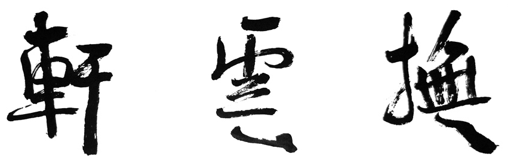
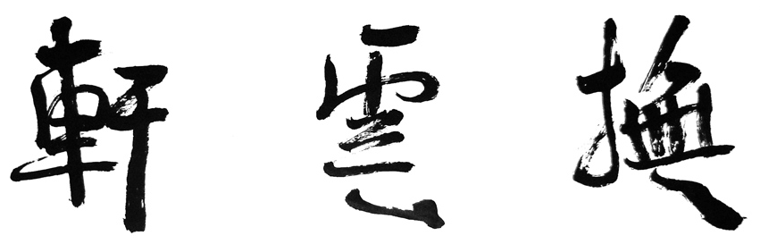

Biography
 

|
Personal Resume
Daming, Qu
Borns on February 25, 1965
In 1988, he graduated from Fujian normal university faculty of arts and awarded Bachelor of Arts.
Currently, he works for FuJian province children's normal college art director and professor of the teaching and research office of the traditional Chinese painting foundation.
He is also a member of Chinese artists association Fujian branch, as well as a member of Chinese Demographic League.
Main Achievement
Essay:
"Talk About Art Education Reform of China"
"The Capture of Irregular Change of Smooth Shadow."
“The Introduction to the Ancient Chinese Figure Painting"
"The Embodiment of the Humanistic Spirit in the Art Class"
“Artistic Charm of Chinese Painting”
"Aesthetic Role in Artistic Creation"
and many more.
Awards
Participate the "Chinese artists association of the national earthquake, fine art, calligraphy and photography exhibition ", his work "nine earthquake history heroes" won the first prize, and "Thirsty living" also won second prize;
Participate “Celebrate 40 anniversary of the founding of the People's Republic of China on the FuJianian art exhibition” His work“impetuous" won the honourable mention;
Participate “the fourth and the fifth teachers in Fujian province fine arts exhibition”, his work “in the autumn wind figure” and many other works received honour mention
He received bronze award at “International Contest of Chinese painting" with the work “A piece of white cloud drifting away.”
His works "childhood dream", "ancient eternal" all shown on the fourth session of the youth art exhibition of Fujian province.
He often published in various journals and magazines, such as "JiangSu pictorial", "Journal of FuJian", "The New Fujian", "Fujian TV Guide - the east China sea gallery", "Green Park", "HaiXia Sisters", "HaiXia Literature" and so on.
1996 school advanced workers
1997 annual school advanced workers and advanced education workers
1998 annual Fuzhou education system advanced workers
2005 annual advanced worker and annual scientific research advanced individual education workers
2006 Advanced Individual Teacher of Academic Year
2007 Outstanding Political Science Educators of the year
2007 His Traditional Chinese Painting "Red Lattern" received third place in the "FuJian Inaugural Faculty Art Exhibition"
2008-2009 School Year Teaching Advanced Individual
2009, his Chinese traditional painting "Simple Pleasure" received a second place on "The First Art Teacher Colleges FuJian Outstanding Works Exhibition"
2010, his Chinese traditional painting "Conversation" was selected into competition of "2010 "Yongding Hakka Tulou •" National Chinese Painting Contest"
2010, his Chinese traditional painting "Hui An Women" was selected into competition of "Hundred Flowers Award --- Ethnic Chinese Ethnic Art Exhibition".
His art was collected.
Essay Awards:
"Aesthetic Role in Artistic Creation" was published on "FuJian Literature"2005、NO.11 CN35--1006/I
“Artistic Charm of Chinese Painting” was published on "Chinese Education Magazine", 2006.NO.12 CN39—3843/G
"Freehand and Stylized of Chinese Painting" was published on magazine "FuJian Arts" 2007、NO.3 CN35—1139/J
2008, his essay "In contrast to the significance of class work" received second place in "Third Political and Ideological Education Seminar"
2008 his essay "On the Nature of Children's Art to Create Glow" was published on "Education Research" NO.4.
2009 his essay "Inner Meaning of Chinese Painting" was published on magazine “FuJian Arts" NO.6.